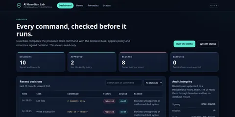
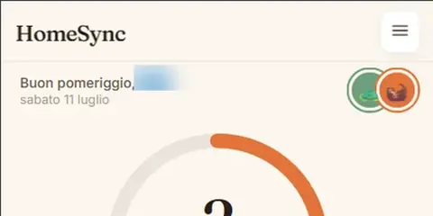
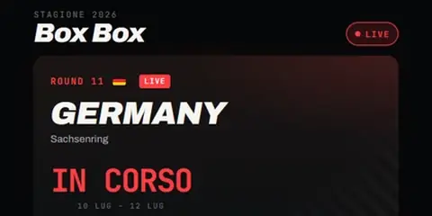
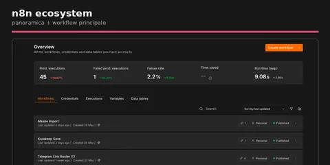
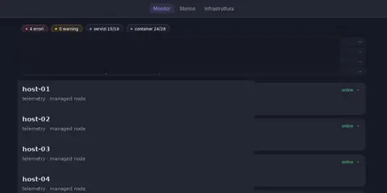
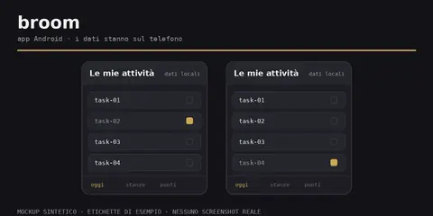
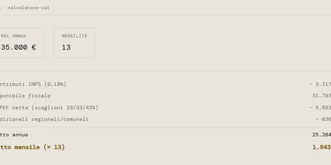
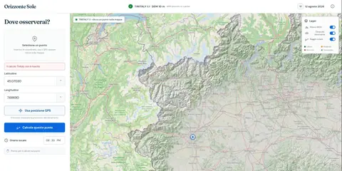

AI agents / SecurityResearch prototype
AI Guardian Lab
Python middleware that checks shell commands proposed by agents, with a dashboard to follow the decisions. Deterministic rules come before any LLM.
I connect AI, software and systems to solve practical problems.
I analyse problems, choose how to structure solutions and develop with AI-agent assistance. I handle specifications, verification and deployment, from automation to applications I use on my own server.
01 / PROJECTS
I use some of these on my home server every day; others are prototypes I use to study AI agents.

AI agents / SecurityResearch prototype
Python middleware that checks shell commands proposed by agents, with a dashboard to follow the decisions. Deterministic rules come before any LLM.
AI agents / SupervisionExperimental Linux application
A local UI for supervising multiple coding-agent conversations: tool activity, events, state and notes in one place.

Backend / Web applicationUsed daily by two people
Household tasks, recurring chores and shared history. FastAPI backend with data on our home server; SQLite avoids a separate database service.

Data pipeline / PWAPrivate MotoGP league
A PWA for MotoGP fantasy with friends. Adaptive updates, transparent scores and optional LLM-based news analysis.

Automation / AI integrationsSelf-hosted · Private code
From Telegram links to the right services: rules for known domains, an LLM for new ones, and a queue between intake and processing.

Systems / OperationsHome server · Private details
The server running my services: separate public and administrative access, offsite backups and a dashboard for checks.

Mobile / Local dataAndroid · In development
An Android household-task app with data on the phone and sync over the same Wi-Fi network.

Frontend / Technical testPublic demo
An Italian gross-to-net salary calculator built for a technical test: readable formulas, a calculation breakdown and no backend.

GIS / Adaptation and deploymentFork · Demo retired
A fork of Luca Malinverno’s project, adapted and hosted for the 12 August 2026 eclipse, with Piedmont terrain data stored locally.
02 / APPROACH
Before choosing a tool, I ask what it needs to do and how I will check that it works. I use those questions across different projects.
With AI assistance, I turn a request into a first version to test.
I check the first version before using it. Then I deal with issues that arise and keep it up to date.
I start with the problem, define constraints and verification criteria. Practical experience and study help me choose how to proceed.
Experience and education →I break work into tasks and keep context, tool events and decisions visible.
superPiI study rules outside the model and distinguish command checks from system isolation.
AI Guardian LabI handle updates, external sessions and pipeline error notifications.
BoxBoxI match databases and infrastructure to real usage without unnecessary services.
HomeSyncI maintain services on my server, check backups and distinguish what I use from what I am experimenting with.
srv1 Infrastructure03 / SKILLS
From skills to projects: here is where I apply them. Other topics belong to my training.
Orchestration, context, supervision and command checks.
superPi →APIs, interfaces and web apps for concrete needs.
HomeSync →Connect services, update data and handle pipeline errors.
n8n Ecosystem →Deployment, access, backups and multi-site IT support.
srv1 Infrastructure →Android interfaces and on-device data.
Broom →Experience in maintenance, equipment, manufacturing and 3D design.
Background →ProfessionAI and other courses cover RAG, Machine Learning, data analysis with Pandas and NumPy, scikit-learn, Hugging Face, relational and NoSQL databases, ML APIs and AWS cloud computing. AutoCAD 2D/3D belongs to my earlier technical training. These topics are not all presented as equivalent professional experience.
The 11 course projects Datapizza profile04 / BACKGROUND
Maintenance taught me to diagnose faults. Networks, programming and AI training broadened the tools I use to address problems.
Specifications, technical choices, AI-assisted development and verification. Experimental prototypes kept distinct from household services in use.
Python and HTML automation for over 20 hospitality sites, company networks, multi-site deployment and ticketing.
Material processing following technical specifications and quality checks.
Fault diagnosis and preventive and corrective maintenance of equipment and building systems in healthcare facilities.
Installation, maintenance and repair of heating systems.
Operational experience in warehouse and logistics.
Operational work in construction.
Independent work in drafting, design and 3D printing.
Machine operation and production checks in rubber and plastics manufacturing.
Metalworking and fabrication assembly.
Work experience in England, in a warehouse and a pub kitchen.
Seasonal work harvesting and sorting fruit.
Experience in electrical installation.
Records, archives, mail, front office and switchboard.
AI Development · ProfessionAI · July 2025 – January 2026 · 400 hours, EQF 6.
PCEP · Certified Entry-Level Python Programmer · Python Institute · 2023.
AutoCAD 2D/3D · 2017. Scientific-technological secondary diploma · I. Porro, Pinerolo · 2012.
Native Italian · English B2 · Basic French
05 / CONTACT
I’m looking for a tech role involving AI. I’m open to on-site work in Turin, hybrid arrangements or remote roles. Get in touch if you’d like to talk.
This local copy prepares an email draft: no message is sent to the server.